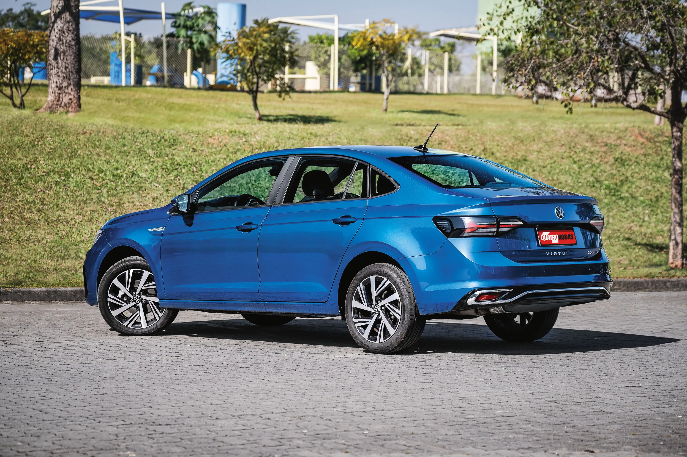
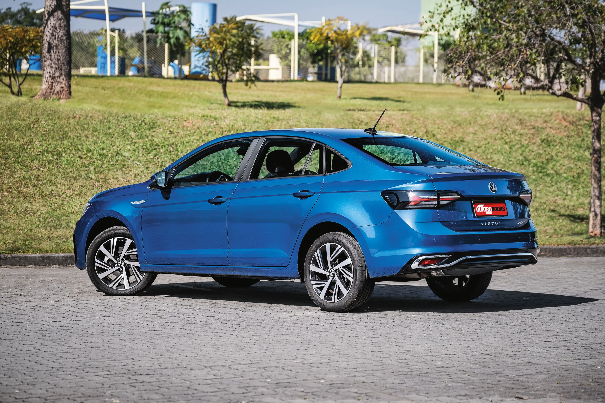

Volkswagen Virtus 2024
 

O Virtus ainda vende bem menos que o Onix Plus, mas a Volkswagen conseguiu acertar em diversos pontos para torná-lo uma excelente opção entre os sedãs compactos. Ao contrário da Chevrolet, que continua vendendo uma versão 1.0 aspirada de seu sedã (com preço mais baixo e boas vendas), a marca alemã decidiu subir seu modelo de patamar e oferecer apenas a motorização turbo. Com isso, a opção de entrada se diferencia apenas pelo câmbio manual, uma receita interessante, enquanto as outras tem transmissão automática. Mas o grande destaque da linha usa outro conjunto. O Virtus Exclusive, com motor 1.4 TSI de 150 cv, se tornou uma opção até para quem não abria mão de um SUV nessa faixa de preço. Ele conta com rodas aro 18, faróis full LED, lanternas em LED e um acabamento acima do esperado. Ainda vem com multimídia de 10,1″, painel digital, carregador sem fio, A/C automático com saída traseira, 6 airbags, ACC, controle de tração e estabilidade, alerta de colisão com frenagem automática, sensor de chuva e crepuscular, entre outros. O espaço interno também é bom, sem fazer os ocupantes traseiros sofrerem tanto como em alguns SUVs de preço similar. E isso sem citar o enorme porta-malas de 521 litros. O preço é um pouco salgado, mas seus R$ 150.990 pelo menos garantem as 3 primeiras revisões grátis. Além dessa opção, o Virtus ainda é vendido em outras 4 versões, começando em R$ 108.990.